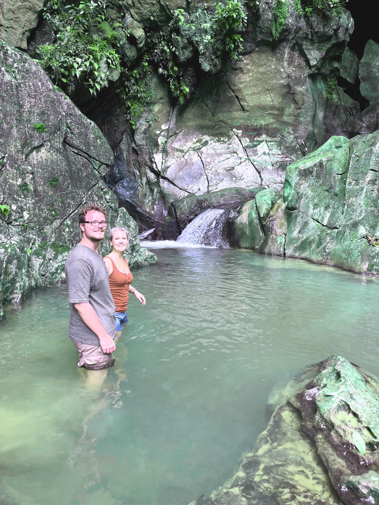
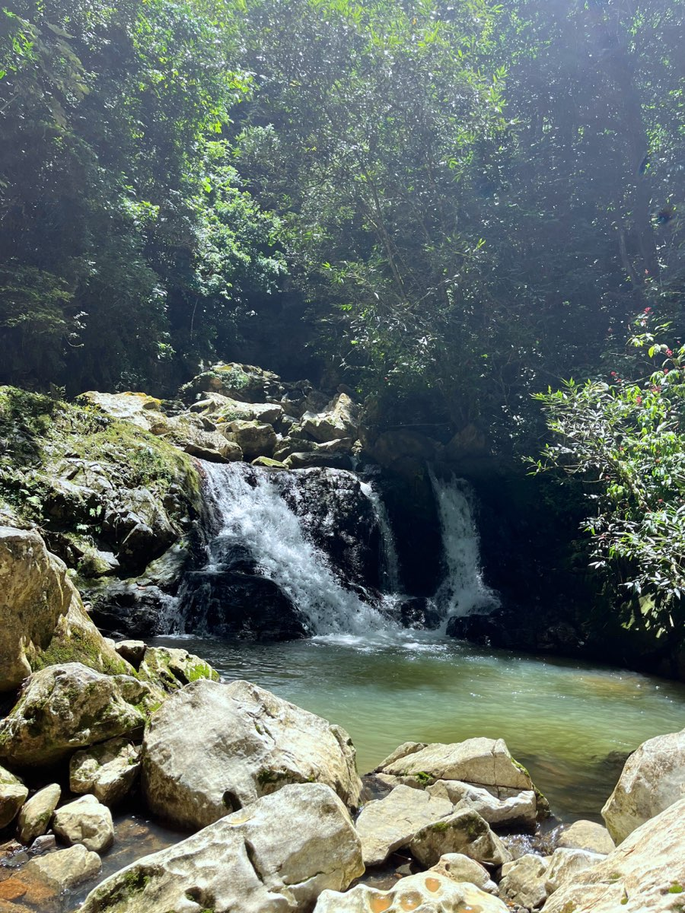
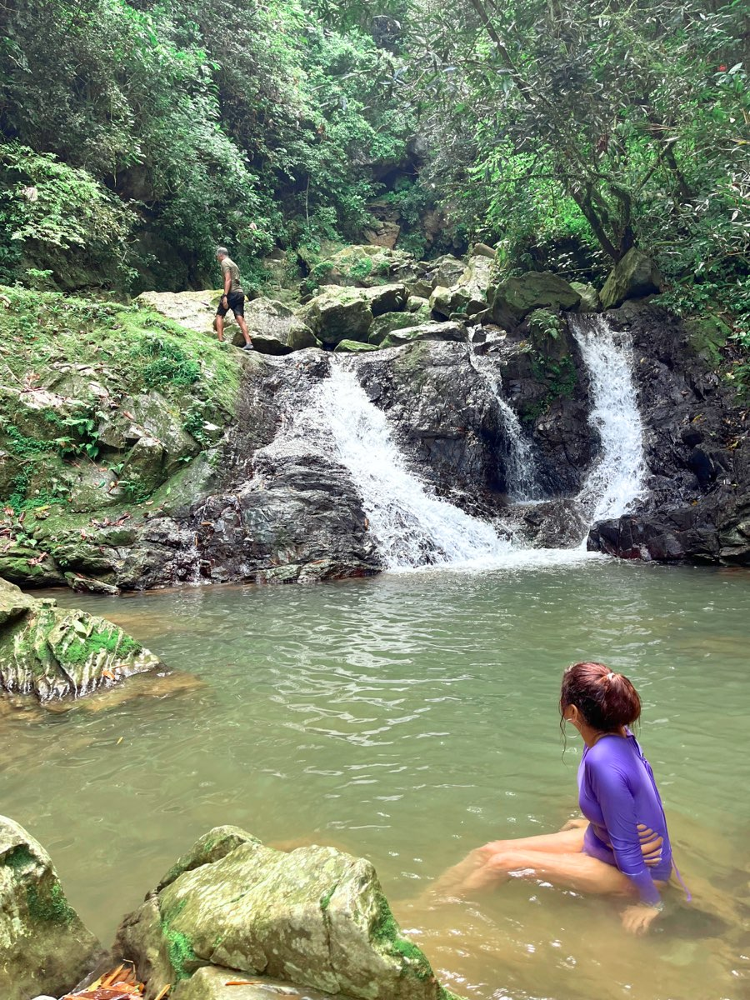
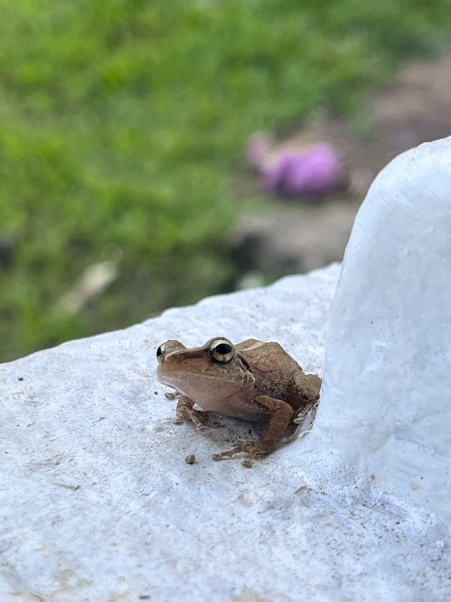
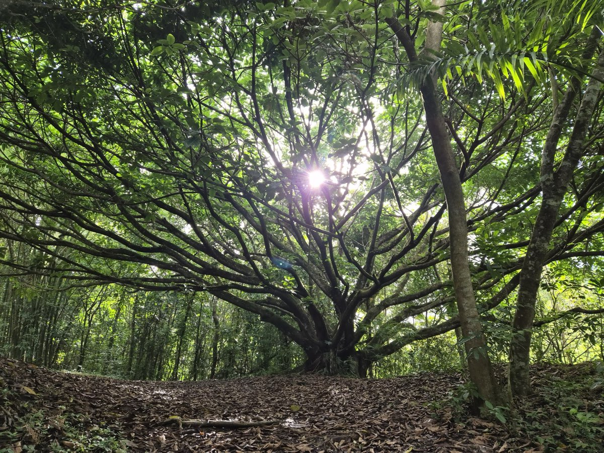
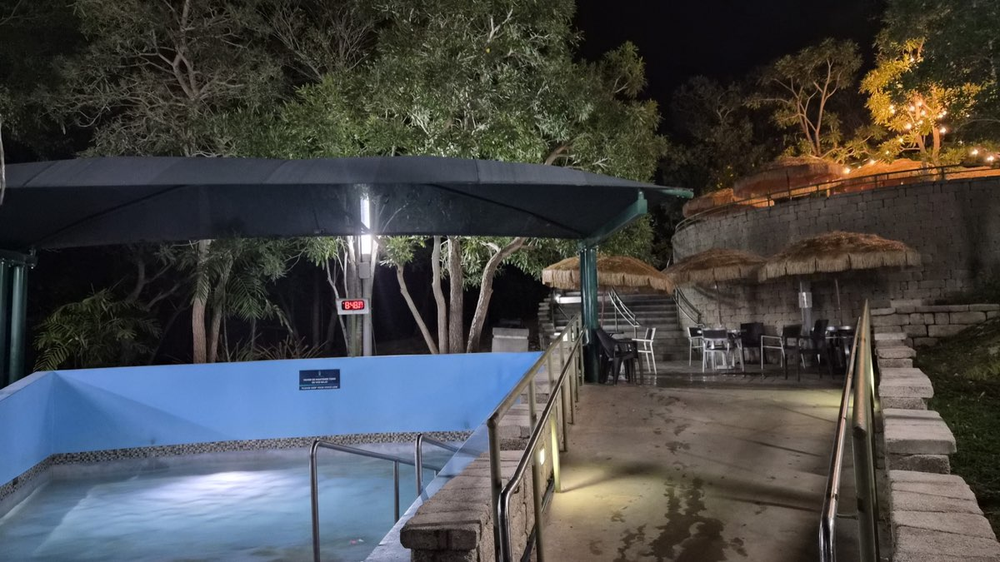
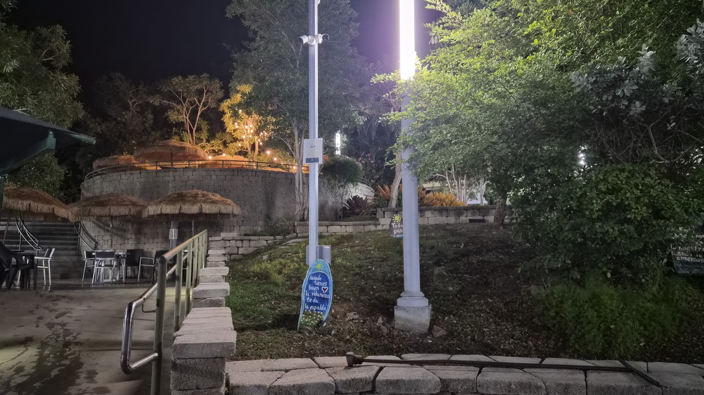
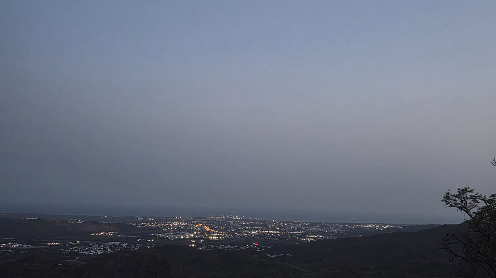
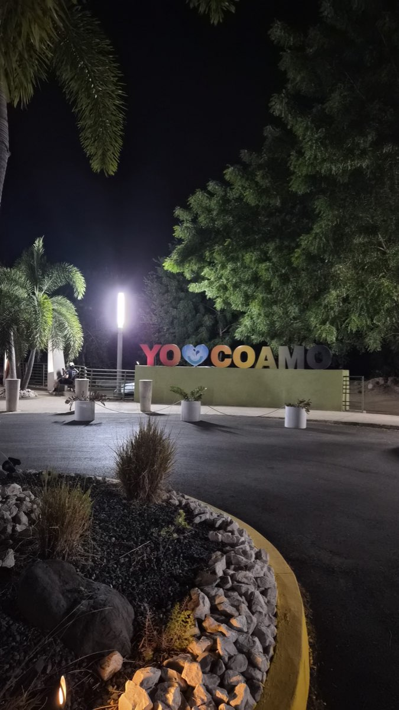

Reconnect
Reconnect
River Wellness Retreat
Difficulty:
Challenging
Includes a river hike
Wellness travel
Built around how you feel, not how many places you see. Cold river water, warm hot springs and a slower rhythm, so you leave refreshed and recharged.
Forest yoga, riverside breathwork, cool natural pools and restorative hot springs in the Puerto Rican countryside.
What to expect
- Pickup included We pick you up.
- Forest yoga Yoga and mindful movement in a lush forest.
- River hike A walk to a secluded river for breathwork and cold-water immersion. Expect to get wet.
- Meal in Guavate An authentic meal that celebrates Puerto Rican flavors.
- Hot springs End in the soothing warmth of Puerto Rico’s historic hot springs.